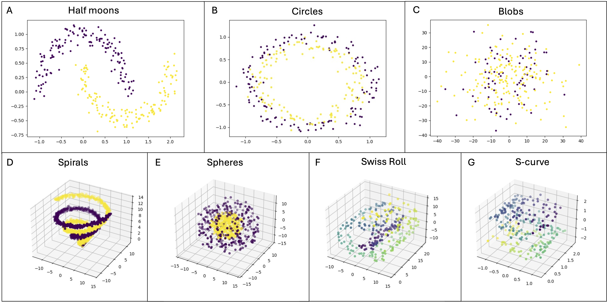
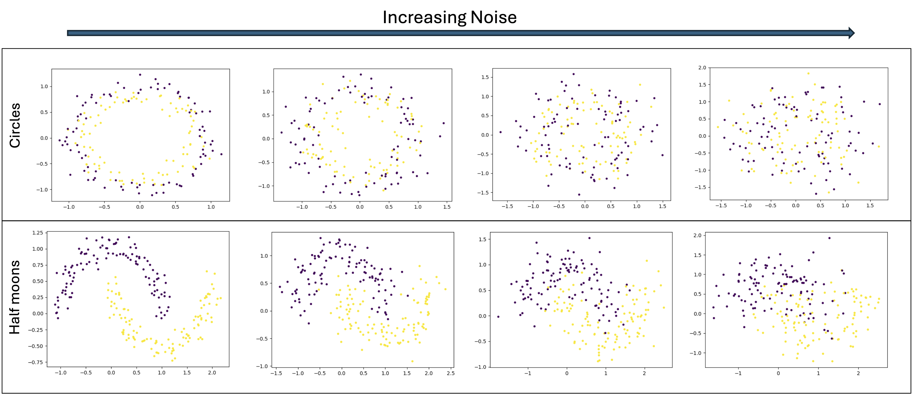

API Overview#
Quick overview of the Methods and Datasets available in qbiocode.
Methods#
Depending on the underlying foundations in qbiocode can be….
Embeddings#
Collection of common embeddings (qbiocode.embeddings) functionalities.
|
Apply an embedding to the training and test datasets. |
Evaluation#
The qbiocode.evaluation submodule of qbiocode computes the evaluation metrics for the input dataset and the models.
Data Evaluation#
Depending on the underlying mathematical foundations, they can be classified into the following categories: (i)..
|
This function evaluates a dataset and returns a transposed summary DataFrame with various statistical measures, derived from the dataset. |
Model Evaluation#
|
Evaluates the model performance using accuracy, F1 score, and AUC. |
Model Computation#
qbiocode brings together a number of established machine learning model both from classical and quantum (qbiocode.learning).
Multiple models can be run via the following
|
This function runs the ML methods, with or without a grid search, as specified in the config.yaml file. |
Classical Models#
QBioCode provides classical machine learning models from scikit-learn for baseline comparisons and benchmarking against quantum models.
|
This function generates a model using a Decision Tree (DT) Classifier method as implemented in scikit-learn. |
|
This function generates a model using a Logistic Regression (LR) method as implemented in scikit-learn. |
|
This function generates a model using a Multi-layer Perceptron (mlp), a neural network, method as implemented in scikit-learn. |
|
This function generates a model using a Gaussian Naive Bayes (NB) Classifier method as implemented in scikit-learn. |
|
This function generates a model using a Random Forest (RF) Classifier method as implemented in scikit-learn. |
|
This function generates a model using a Support Vector Classifier (SVC) method as implemented in scikit-learn. |
Each model has an alternative function with grid search parameters for hyperparameter optimization. Details can be found in the specific qbiocode.learning submodules.
Quantum Models#
QBioCode provides quantum machine learning models that leverage quantum computing capabilities for classification and regression tasks. These models can be run on quantum simulators or real quantum hardware.
|
This function computes a Quantum Neural Network (QNN) model on the provided training data and evaluates it on the test data. |
|
This function computes a quantum support vector classifier (QSVC) using the Qiskit Machine Learning library. |
|
This function computes a Variational Quantum Classifier (VQC) using the Qiskit Machine Learning library. |
|
This function generates quantum circuits, computes projections of the data onto these circuits, and evaluates the performance of classical machine learning models on the projected data. |
Each quantum model has an alternative function where grid search parameters and quantum-specific configurations can be provided as input. Details can be found in the specific qbiocode.learning submodules.
Preprocessing#
Feature scaling is fitted on the training split only and then applied to the test split, so no test-set statistic can reach the transform. QProfiler routes all of its scaling through this helper:
|
Scale train and test with a single scaler fit on the training set only. |
Graph Embeddings (QuVINE)#
The QuVINE app (qbiocode.apps.quvine) embeds the nodes of a graph using
classical and quantum random walks combined with SGNS representation learning.
Its dependencies ship behind an optional extra – pip install "qbiocode[quvine]" –
so import qbiocode and every classical embedding keep working without it.
|
Extract a single QuVINE embedding from |
|
List all callable method names. |
|
Resolve a method name to |
Every QuVINE method is also reachable through the ordinary embedding entry point,
exactly like pca / nmf / umap: get_embeddings("quvine_rwr", ...).
Because graph embeddings have no out-of-sample transform, they are
transductive – test features take part in building the graph, test
labels never do. qbiocode.embeddings.is_transductive() reports which
methods behave this way, and each such call emits a UserWarning saying so.
|
Return True if |
Graph-complexity metrics for the input graph are provided separately by
qbiocode.evaluation.graph_evaluation – run it on the same graph to
characterise it:
|
Summarize a graph's complexity as a one-row DataFrame. |
See the QuVINE application guide for usage details.
Visualisation#
The plotting module (qbiocode.visualization) enables the user to visualise the data and provides out-of-the-box plots for some
of the metrics.
|
This function takes in as input a Pandas Dataframe containing the results and data evaluations for a given dataset. |
|
Plot publication-quality correlation figures from a |
Datasets#
QBioCode provides a comprehensive suite of synthetic dataset generators for testing and benchmarking machine learning algorithms. These datasets are particularly useful for:
Algorithm Development: Test new quantum and classical ML algorithms
Benchmarking: Compare model performance across different data characteristics
Educational Purposes: Demonstrate ML concepts with controlled data properties
Reproducibility: Generate consistent datasets with fixed random seeds
Data Generation Module#
The qbiocode.data_generation module provides functions to generate various types of synthetic datasets with configurable parameters. QBioCode supports a diverse collection of dataset types, each designed to test specific aspects of machine learning algorithms, from simple 2D geometric patterns to complex high-dimensional manifolds.
{kind=link}

Overview of artificial dataset types available in QBioCode: The figure showcases the variety of synthetic datasets that can be generated, including 2D geometric patterns (Circles, Moons), 3D manifolds (S-Curve, Swiss Roll), and high-dimensional datasets (Spheres, Spirals, Classification). Each dataset type is designed to challenge different aspects of machine learning algorithms, from handling non-linear decision boundaries to learning complex manifold structures.#
Main Generator Function#
|
Generate synthetic datasets for machine learning benchmarking. |
The generate_data function serves as a unified interface to generate multiple dataset types with customizable parameters including sample size, noise levels, dimensionality, and class balance.
Available Dataset Types#
QBioCode supports the following synthetic dataset generators:
2D Geometric Patterns
|
Generate multiple concentric circles datasets with varying parameters. |
|
Generate multiple two-moons datasets with varying parameters. |
Circles: Concentric circles with adjustable noise and separation
Moons: Interleaving half-circles (two moons) with controllable noise
{kind=link}

Effect of noise parameter on 2D geometric patterns: Circles (top row) and Moons (bottom row) datasets with increasing noise levels from left to right. The noise parameter controls the standard deviation of Gaussian noise added to the data points, affecting class separability.#
3D Manifolds
|
Generate multiple 3D S-curve datasets with varying parameters. |
|
Generate multiple 3D Swiss roll datasets with varying parameters. |
S-Curve: S-shaped 3D manifold for testing manifold learning
Swiss Roll: Classic 3D manifold with spiral structure
High-Dimensional Datasets
|
Generate multiple concentric n-dimensional spheres datasets with varying parameters. |
|
Generate multiple n-dimensional spiral datasets with varying parameters. |
|
Generate multiple high-dimensional classification datasets with varying parameters. |
Spheres: Concentric n-dimensional spheres for high-dimensional classification
Spirals: Intertwined spiral patterns in n-dimensional space
Classification: Customizable high-dimensional datasets with: - Configurable number of features, informative features, and redundant features - Multiple classes with adjustable separation - Class imbalance through weight parameters - Cluster structure within classes
Configurable Parameters#
All dataset generators support extensive parameter customization:
- Sample Configuration
n_samples: Number of data points (default: 100-300)n_classes: Number of classes (default: 2)weights: Class balance ratios
- Noise and Complexity
noise: Noise level (0.0-1.0)n_informative: Number of informative featuresn_redundant: Number of redundant featuresn_clusters_per_class: Cluster structure
- Dimensionality
n_features: Total number of featuresdim: Dimensionality for manifold datasetsrad: Radius for geometric patterns
- Reproducibility
random_state: Random seed for reproducible dataset generation (default: 42)Ensures consistent results across multiple runs
Can be customized for different random variations
- Output
save_path: Directory to save generated datasetsDatasets saved as CSV files with metadata JSON
Example Usage#
from qbiocode.data_generation import generate_data
# Generate circles dataset with custom parameters and fixed random seed
generate_data(
type_of_data='circles',
n_samples=[100, 200, 300],
noise=[0.1, 0.3, 0.5],
save_path='./my_datasets/circles',
random_state=42 # For reproducibility
)
# Generate high-dimensional classification data with custom seed
generate_data(
type_of_data='classes',
n_samples=[500],
n_features=[20, 50, 100],
n_informative=[5, 10, 20],
n_classes=[2, 3],
save_path='./my_datasets/classification',
random_state=123 # Different seed for variation
)
# Generate reproducible moons dataset
from qbiocode.data_generation import generate_moons_datasets
generate_moons_datasets(
n_samples=[200, 400],
noise=[0.2, 0.4],
save_path='./moons_data',
random_state=42 # Same seed produces identical results
)
Dataset Characteristics#
Each dataset type is designed to test specific ML capabilities:
Dataset |
Dimensionality |
Tests |
|---|---|---|
Circles |
2D |
Non-linear separability, kernel methods |
Moons |
2D |
Non-linear boundaries, noise robustness |
S-Curve |
3D manifold |
Manifold learning, dimensionality reduction |
Swiss Roll |
3D manifold |
Unrolling algorithms, local structure |
Spheres |
3D |
Radial patterns, distance-based methods |
Spirals |
3D |
Complex non-linear patterns |
Classification |
High-D |
Feature selection, curse of dimensionality |
Batch Generation#
The generator supports batch creation of multiple dataset configurations:
# Generate multiple configurations automatically
N_SAMPLES = [100, 200, 300]
NOISE = [0.1, 0.3, 0.5, 0.7]
generate_data(
type_of_data='moons',
n_samples=N_SAMPLES,
noise=NOISE,
save_path='./batch_datasets'
)
# This creates len(N_SAMPLES) × len(NOISE) = 12 datasets
Output Format#
Generated datasets are saved with:
CSV files: Feature matrix and labels
JSON metadata: Configuration parameters used
Naming convention:
{type}_{config_id}.csv
See also
For a complete tutorial on data generation, see the Artificial Data Generation Tutorial.
References#
Full module reference#
Every module, generated from the source tree: